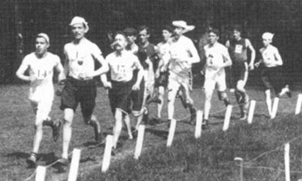

I Giochi Olimpici Estivi del 1900, ufficialmente noti come Giochi della II Olimpiade, si tennero a Parigi, in Francia, nell’ambito dell'Esposizione Universale del 1900. Le gare si svolsero tra il 14 maggio e il 28 ottobre 1900, rendendoli i Giochi Olimpici più lunghi della storia.
Contesto Storico
Dopo la rinascita dei Giochi Olimpici moderni ad Atene nel 1896, l’edizione di Parigi del 1900 rappresentò un momento cruciale nello sviluppo del movimento olimpico. Tuttavia, a differenza della prima edizione, i Giochi del 1900 furono mal organizzati, con eventi integrati all'Esposizione Universale, causando confusione tra atleti e pubblico. Molti partecipanti non si resero conto di aver preso parte a competizioni olimpiche.
Per la prima volta, le donne furono ammesse alle gare olimpiche: furono 22 le atlete che gareggiarono in discipline come il tennis e la vela.
Sport e Discipline
- Atletica leggera: gare su pista e salto presso il Bois de Boulogne.
- Nuoto: le gare si tennero nella Senna, inclusa la singolare “corsa con ostacoli in acqua”.
- Ciclismo: gare su pista e su strada.
- Scherma: con prove di fioretto, spada e sciabola.
- Equitazione: salto ostacoli, salto in alto, salto in lungo e guida con carrozza postale.
- Tennis: competizioni maschili e femminili.
- Golf: per la prima volta incluso nel programma olimpico.
- Vela: regate su più classi nella Senna e al largo.
- Rugby a 15: debutto della disciplina alle Olimpiadi.
- Cricket: apparizione unica nella storia olimpica.
- Pelota basca: sport tradizionale dei Paesi Baschi.
- Pallanuoto: alla sua prima presenza nel programma olimpico.
Alcuni sport sperimentali, come il nuoto subacqueo o il volo con pallone aerostatico, non furono più riproposti nelle edizioni successive.
Atleti e Prestazioni Memorabili
- Margaret Abbott, golfista statunitense, fu la prima donna a vincere un titolo olimpico, pur senza sapere di star partecipando alle Olimpiadi.
- Gli Stati Uniti dominarono nell’atletica e nel nuoto.
- Il francese Ray Ewry vinse nei salti da fermo, consolidando la sua fama.
- La Francia, nazione ospitante, ottenne numerose vittorie, soprattutto in discipline come scherma e ciclismo.
Problemi e Controversie
L’integrazione con l’Esposizione Universale causò sovrapposizioni di calendario e una mancanza di identità per i Giochi.
La durata eccessiva dell’evento compromise la partecipazione e la visibilità.
In alcune gare parteciparono professionisti, contravvenendo allo spirito olimpico amatoriale.
I premi furono assegnati in modo incoerente: molti vincitori ricevettero coppe o trofei invece delle tradizionali medaglie.
Eredità
Nonostante le difficoltà, l’edizione del 1900 fu innovativa sotto diversi aspetti:
- Inizio della partecipazione femminile alle Olimpiadi.
- Ampliamento del programma sportivo.
- Introduzione degli sport di squadra, come rugby e pallanuoto.
- Sperimentazione di nuovi formati competitivi.
I limiti organizzativi di Parigi 1900 portarono alla consapevolezza della necessità di un Comitato Olimpico permanente e indipendente, che fu poi istituito per migliorare le edizioni successive.
Testimonianze storiche e fonti primarie nel mondo dello sport
Nel mondo dello sport, esistono numerose testimonianze storiche che permettono di comprendere l’evoluzione delle pratiche sportive e dei materiali utilizzati.
Ad esempio, la collezione di attrezzature sportive antiche conservata da Europeana documenta l’utilizzo di strumenti in uso nei secoli passati. Questi oggetti mostrano come l’equipaggiamento sportivo si sia trasformato nel tempo, passando da materiali semplici a tecnologie più avanzate, offrendo un importante spaccato sulla cultura sportiva dell’epoca.
Un altro documento significativo è un articolo giornalistico originale risalente alle Olimpiadi del 1924, che offre una narrazione dettagliata dell’evento e delle sue sfide. Attraverso queste pagine, si possono leggere testimonianze dirette di cronisti e spettatori, preziose per ricostruire il clima sociale e sportivo del tempo.
I regolamenti ufficiali delle Olimpiadi del 1936 costituiscono una fonte primaria fondamentale per capire le norme che disciplinavano le competizioni e come queste regole riflettessero i valori e le tensioni storiche dell’epoca.
"Lo sport non è solo una competizione, ma un modo di unire le persone e superare le barriere culturali. Ogni gara è una sfida contro se stessi, non solo contro gli avversari."
— Irena Szewińska